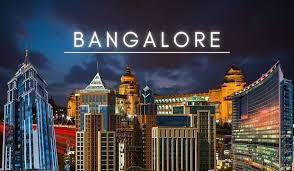
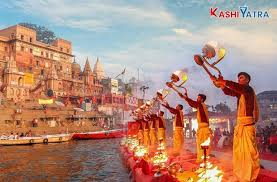

Travel Destination GuideTravel Destination Guide
Travel Destination GuideTravel Destination GuideBengaluru (also called Bangalore) is the capital of India's southern Karnataka state. The center of India's high-tech industry, the city is also known for its parks and nightlife. By Cubbon Park, Vidhana Soudha is a Neo-Dravidian legislative building. Former royal residences include 19th-century Bangalore Palace, modeled after England’s Windsor Castle, and Tipu Sultan’s Summer Palace, an 18th-century teak structure.

Here is the location of bangalore city.
Varanasi or Kashi, is one of the world's oldest continuously inhabited cities, situated on the Ganges River in Uttar Pradesh, India. Known as the spiritual capital of India, it is a premier pilgrimage site where Hindus believe dying brings salvation. The city is famous for its 84 ghats, the Kashi Vishwanath temple, silk weaving, and vibrant, ancient alleyways.

Here is the location of Varanasi.
Paris, France's capital, is a major European city and a global center for art, fashion, gastronomy and culture. Its 19th-century cityscape is crisscrossed by wide boulevards and the River Seine. Beyond such landmarks as the Eiffel Tower and the 12th-century, Gothic Notre-Dame cathedral, the city is known for its cafe culture and designer boutiques along the Rue du Faubourg Saint-Honoré.

Here is the location of paris.
South Korea, an East Asian nation on the southern half of the Korean Peninsula, shares one of the world’s most heavily militarized borders with North Korea. It’s equally known for its green, hilly countryside dotted with cherry trees and centuries-old Buddhist temples, plus its coastal fishing villages, sub-tropical islands and high-tech cities such as Seoul, the capital

Here is the location of south korea.
Mexico officially the United Mexican States,is a country in North America.It is the northernmost country in Latin America and borders the United States of America to the north, and Guatemala and Belize to the southeast

Here is the location of mexico.